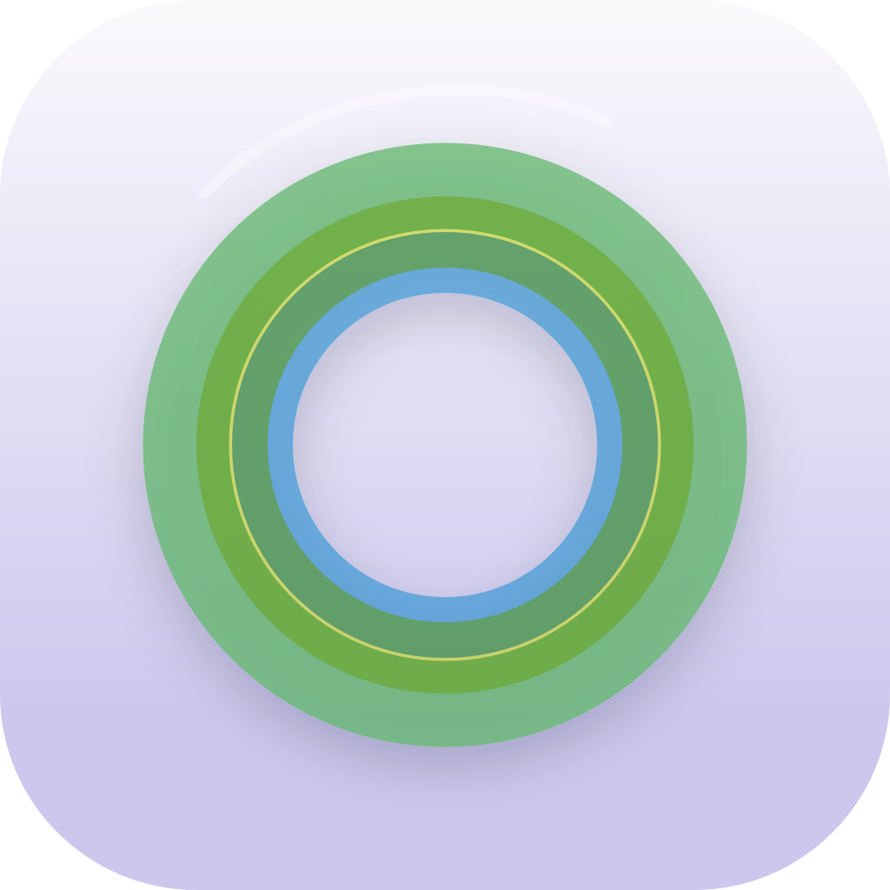

Ask a question
Include your iPhone model, iOS version, and what happened. Please do not send private task titles or screenshots containing sensitive information.
Email Task Focus support →
Task FocusSupport / a little help
Most Task Focus settings are designed to stay simple and reversible. Find a quick answer below, or send a note if something is not working.
Include your iPhone model, iOS version, and what happened. Please do not send private task titles or screenshots containing sensitive information.
Email Task Focus support →Learn what stays on your device, how optional permissions work, and how to remove local app data.
Read the privacy policy →Quick answers
App protection requires Apple’s Screen Time authorization. In Task Focus, turn on “Pause distracting apps,” choose your apps, and approve the authorization request. If it was previously denied, review Family Controls or Screen Time access in iOS Settings, then try again. App blocking begins only when a protected focus session starts.
Finish the task from Task Focus or tap the completion circle in the Live Activity. Task Focus clears its app shields immediately. Turning off “Pause distracting apps” also clears the shield. If an interrupted session leaves a shield visible, reopen Task Focus and end the session.
Live Activities must be allowed for Task Focus in iOS Settings. They may also be unavailable because of device settings or system limits. After enabling them, start a new focus session. Supported iPhones can show the activity on the Lock Screen and in the Dynamic Island.
Check-ins are optional local notifications scheduled at the interval you choose while a task is active. Enable “Gentle check-ins,” allow notifications, and choose an interval. They stop when the task ends or when you turn the feature off.
No, and you are never charged for it either. A focus works with or without pausing apps, as often as you like, and pausing apps is free and always will be.
Everything the app remembers after a session ends. Pro keeps every focus you finish, where the free app keeps the current week; it shows what your focus adds up to over time; and it lets you keep a profile for each kind of work, so the right apps pause for the right thing. It is a one-time, non-consumable purchase—not a subscription. Pausing apps stays free.
Open Task Focus, select “Upgrade,” then choose “Restore a previous purchase.” Make sure the device uses the same Apple Account that made the original purchase. Apple manages the purchase record.
No. Your app, category, and website choices are represented by Apple-provided opaque tokens and stay on your device. Task Focus does not collect your activity in other apps or send your selection to the developer.
Yes, if you are signed in to iCloud and leave syncing on. Task Focus carries your finished sessions and your app settings between your own devices through the private database of your own iCloud account, written as encrypted fields — so neither the developer nor Apple can read them. Your Screen Time selection is never synced; it stays on the device that chose it. Syncing can be turned off in the app, and you can export your history as a file you keep.
Turn off app protection or check-ins at any time to stop those features. You can erase your history from inside the app, and deleting Task Focus removes its locally stored information. Anything that synced sits in your own iCloud account and can be removed in iOS Settings under your name, iCloud, and the list of apps using iCloud. The developer maintains no account, no server, and no copy of your history.
Still stuck?